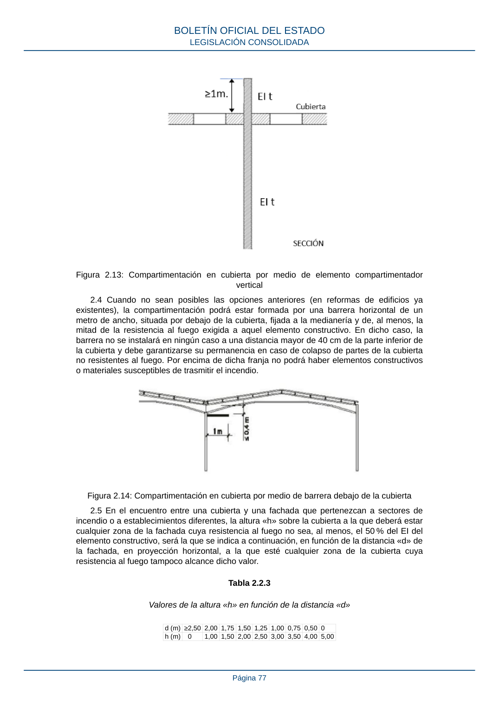

RSCIEI · edición 2025-04-10 · capa asociada
Documento RSCIEI-asociada · SHA-256 del PDF 85aa0af25d51e5b58d8975a4eefbf76d3f57a8933445cfe814ae9c4818a2e3e7
Página física 77 de 108.
Copia fiel del PDF fuente · Fuente oficial
Ficha de la disposición en la fuente oficial
Texto extraído y reorganizado: Basado en datos de la Agencia Estatal Boletín Oficial del Estado. PDF reproducido: Fuente de los datos: Agencia Estatal Boletín Oficial del Estado.
Formato: Texto de la página (Markdown)
Figura 2.13: Compartimentación en cubierta por medio de elemento compartimentador vertical 2.4 Cuando no sean posibles las opciones anteriores (en reformas de edificios ya existentes), la compartimentación podrá estar formada por una barrera horizontal de un metro de ancho, situada por debajo de la cubierta, fijada a la medianería y de, al menos, la mitad de la resistencia al fuego exigida a aquel elemento constructivo. En dicho caso, la barrera no se instalará en ningún caso a una distancia mayor de 40 cm de la parte inferior de la cubierta y debe garantizarse su permanencia en caso de colapso de partes de la cubierta no resistentes al fuego. Por encima de dicha franja no podrá haber elementos constructivos o materiales susceptibles de trasmitir el incendio. Figura 2.14: Compartimentación en cubierta por medio de barrera debajo de la cubierta 2.5 En el encuentro entre una cubierta y una fachada que pertenezcan a sectores de incendio o a establecimientos diferentes, la altura «h» sobre la cubierta a la que deberá estar cualquier zona de la fachada cuya resistencia al fuego no sea, al menos, el 50 % del EI del elemento constructivo, será la que se indica a continuación, en función de la distancia «d» de la fachada, en proyección horizontal, a la que esté cualquier zona de la cubierta cuya resistencia al fuego tampoco alcance dicho valor. Tabla 2.2.3 Valores de la altura «h» en función de la distancia «d» d (m) ≥2,50 2,00 1,75 1,50 1,25 1,00 0,75 0,50 0 h (m) 0 1,00 1,50 2,00 2,50 3,00 3,50 4,00 5,00 BOLETÍN OFICIAL DEL ESTADO LEGISLACIÓN CONSOLIDADA Página 77

Datos candidatos: compruebe celdas y notas en el PDF.